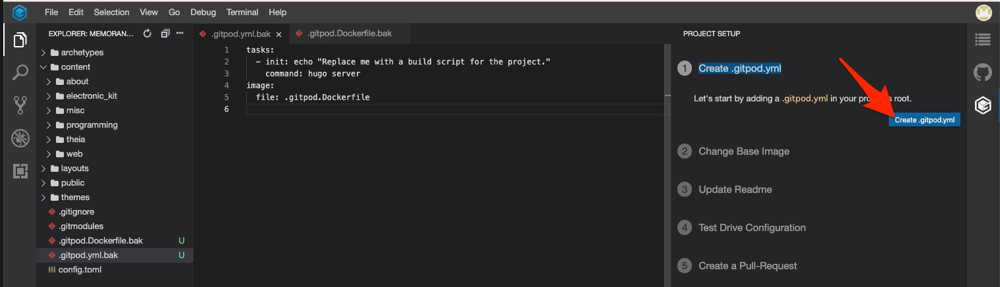
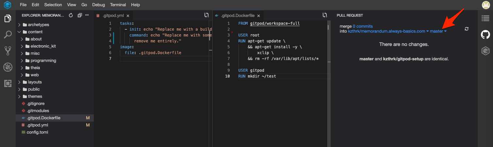

Gitpodの環境設定
はじめに
本稿は、Theia | Theiaを始めてみようの中でGitpodおよびその中で使用されるDockerの設定について切り出したものです。
Github権限設定
作業に入る前にGithubでのGitpodの権限を変更します。すでに行われている場合は不要ですが、当サイトの流れでここまできた場合には行われていないはずです。
右上のアイコンをクリックしてメニューを表示して、Open Access Controlをクリックします。
write public reposにチェックを入れて、Updateをクリックします。
これで、設定作業の中で行うブランチの作成やコミット作業が可能になります。
環境設定
設定がまだ済んでいない場合、右下にGitpodの設定が出来るますよと小さなウインドウが出ているかと思います。 もちろん出ていなくても、この記事にあるように2つのファイルを作成することで設定することは可能です。 本稿では、敷かれたレールの上を走る形で設定したいと思います。

赤枠で囲ったところが、表示されました。ついでに右側のバーにも1つアイコンが増えています。 設定が終わると消えてしまうようですが、それまでは表示されているようですので、もし何らかの操作によって閉じてしまった場合には、ここから再度呼び出してください。
まずは、一番上のCreate .gitpod.ymlをクリックします。

Create .gitpod.ymlボタンをクリックします。

update .gitpod.Dockerfileボタンをクリックします。

ベースとするイメージを選択します。

.gitpod.Dockerfile を作ります。
.gitpod.yml には、Dockefileの項目が追加されていると思います。 編集するのは、.gitpod.Dockerfileの方です。

上記は、xclipをインストールしてみた時の例です。
Test Drive Configurationをクリックして、Push to Branch & Start Workspaceをクリックします。

直接保管した上で再起動しても問題無いのですが、間違っていたとき、想定している結果が得られなかったときに少し面倒です。 そのため、マニュアルにも記載がありますが現時点では別ブランチでコミットしておいては、Github側から新しいインスタンスを使い捨てで起動してテストすることが勧められています。
上手く動作することが分かった場合には、そのブランチをマージするようにします。
Create a pull requestをクリックし、Open Pull Request Viewをクリックします。

Publish Changesをクリックします。

ブランチをmasterから先ほど作成したxxxxx/gitpod-setupを選択します。


設定ファイルをコミットします。左のバーでGitのペインを呼び出します。変更対象のファイルをステージングし、コメントを入力してコミットします。
pushをクリックしてください。
Githubにアクセスして、ブランチを先ほどpushしたブランチに切り替えてからGitpodボタンをクリックします。

Theiaが起動しますが、その時Dockerが初期化されているのが確認できます。

環境したら環境がセットアップされているはずです。変更を加えた内容に応じて確認してください。
問題が無ければ、これを元のブランチにマージすることでDockerの設定作業は完了です。
その他、.gitpod.ymlを編集することで、起動した際の動作(例えばサーバーを毎回起動するなども)可能です。 その場合には、以下echo部分を変更してください。

以上で、Gitpodの環境設定は終了です。
comments powered by Disqus